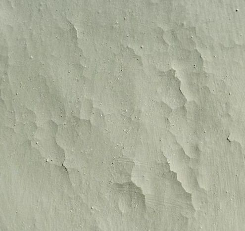

7. Witterungsbedingte/jahreszeitbedingt verzögerte Abbindung - das Ertrinken von Kalkmörtel und Kalkputz im Anmachwasser und Regen
Der beste Zeitraum für die Herstellung von Kalkmörtel im Außenbereich sind die frostfreien Monate (Ende April – Mitte September), denn dann ist die Chance am größten, daß sie rechtzeitig und ausreichend abbinden können. Kalkmörtel erhärten nämlich eigentlich nicht einfach durch "Aufnahme von Kohlendioxid (CO2) aus der Luft", wie es viele meinen, sondern durch die Zuführung von Kohlensäure (aus Anmachwasser + Luft-CO2) nach dem auch für die Kalkkbindung / Kalkerhärtung gültigen Salz-Reaktionssystem Säure (im Falle Kalkabbindung eben die Kohlensäure H2(CO3)2)+ Lauge (Ca(OH)2) = Salz (Kalkkarbonat CaCO3) + Wasser (H2O). Vorher muß aber ausreichend Wasser aus dem Putz abtrocknen, denn nur dann bilden sich die bisher vom Wasser verfüllten und dann luftdurchlässigen Baustoffporen, die dann aus dem wenigen im Luftgemisch vorhandenen Gasanteil von 0,38 Promille (380 ppm) Kohlendioxid soviel aufnehmen, daß sich mit dem im Porenraum noch restlich verbliebenen Anmachwasser die reaktionsentscheidende Kohlensäure entsteht.
Neben der langsam fortschreitenden Karbonatisierung/Carbonatisierung, also der Umwandlung der Kalklauge und der Kohlensäure in
das kohlensaure Salz des Kalkes namens "Kalkstein" (Calcit),
als Ergebnis der chemischen Kalkabbindung setzt die physikalische Abbindung als "Frühfestigkeit" aber auch durch die Trocknung
selbst ein. Dabei rutschen die Mörtel-/Anstrichpartikel im Zuge der Wasserabgabe immer näher zusammen, bis schlußendlich
Londonkräfte (van-der-Waalsche Bindung) entstehen, bei den die eigentlich negativ geladenen Elektronenhüllen an der Außenseite
der Partikel so nahe zusammenstoßen, daß der eigentlich gegebene Abstoßungseffekt negativer Ladungen (vgl. Magnet) zu
einer "Umpolung" durch Umlagerung der Ladungen der Elektronenhüllen führt und die Moleküle sich dipolartig anordnen und sich
dabei magnetähnlich aneinander verketten. Dieser dabei enstehende extreme Bindungseffekt wird auch bei der Bindung von Nanopartikeln
genutzt. Ein richtig rezeptierter und verarbeiteter Luftkalkmörtel mit ausreichend Feinpartikeln - in den monokornartigen
Werktrockenmörteln der Putzhersteller meist nicht ausreichend oder nur durch überhöhte / synthetische Bindemittelzugabe
oder auch feinstgemahlenen sonstigen Bestandteilen wie Tylose/Methylzellulose gegeben - erreicht deshalb ausreichende Stabilitität
und Frostsicherheit, auch wenn er noch lange nicht komplett durchcarbonatisiert ist. Voraussetzung für beide - die chemischen und
die physikalischen Festigungsprozesse / Abbindungen ist immer die ausreichende Trocknung ohne Aufbrennen und verfrühtes
Trockenfallen der frischen Kalkschicht.
Im Klartext:
Die physikalische Abbindung erfordert Trocknung, die chemische Abbindung ausreichende Restfeuchte im Frischmörtel/Anstrich aus
Kalkhydrat-Bindemittel (Luftkalk)!
Hohe Luftfeuchte (Herbst) schränkt nun die Wasserabgabe (Trocknung) aus der frischen Schicht, den davon abhängigen
CO2-Zutritt und die Kohlensäurebildung und die daraus chemisch erfolgende Putzerhärtung ein. Dafür
ist dann die Aufbrenngefahr, also das vorschnelle Verdursten der Kalkbschichtung aus Mörtel und / oder Anstrich etwas gemildert.
Frischer Luftkalkputz sollte weitgehend im Jahr des Mörtelauftrages durchtrocknen. Terminverzögerungen und mangelnder
Fassadenschutz währen der Ausführung und Frischmörtelphase gefährden diese kalktypische Anforderung. Schon ein
Gewitterguß in den frischen Mörtel wäscht diesem die noch löslichen Bindemittel aus, es kommt zu Ausblühungen,
die sich dann als festsitzende Sinterschicht / Sinterhaut an der Oberfläche anlagern und der bindemittelausgemagerte Mörtelrest
ist natürlich keinesfalls mehr geeignet, ordentliche Bindung und Fassadenschutz zu gewährleisten.
Der mißratene Mörtel / Anstrich (Kalktünche) bindet dann überhaupt nicht mehr unter seiner ausspülungsbedingten und
CO2-blockierenden Sinterhaut ab, auch wenn schwach saugfähige Mauersteine seine innere Austrocknung behindern und zusätzlich
ständiges Zuströmen neuer Regenmengen für Dauerfeuchte sorgen. Die maßgebliche Adhäsionsfestigkeit durch die
oben beschriebene physikalische Abbindung, die dem Mörtel schon nach kurzer Zeit hohe Anfangsfestigkeit verleiht, unterbleibt im
dauerfeuchten Milieu ebenfalls.
Falscher Bauablauf verzögert bzw. unterbricht also die Mörtelhärtung. Ungenügend abgebundene Flächen sind dann im Folgewinter besonders frostempfindlich, da sie große Mengen Wasser im schlecht oder kaum abgebundenen Mörtel aufnehmen können, das dann durch Frost Eiskristalle mit erhöhtem Volumen und entsprechendem Sprengeffekt bildet. Derartig mißlungene Mörtelschichten frieren dann schichtenweise und blätterteigartig ab. Zu dicke, von außen oder vom Putzgrund her wasser- bzw. salzbelastetete bzw. hinterläufige Putzlagen und ungenügende Trocknungszeiten der einzelnen Putzlagen steigern diesen Risikobereich. Dem Ersaufen der Frischmörtelschichten folgt dann deren Erfrieren.
8. Falsche, fehlende, unterlassene, eingesparte und nicht ausreichende Nachbehandlung frischer Kalkschichten - Das Aufbrennen und Verdursten
Durch Fehler bei der Nachbehandlung der Frischmörtel, frischer Kalkspachtelungen und Anstriche kann es ebenfalls zu bedeutenden
Störungen des Abbindeprozesses und entsprechenden Schäden der Kalkschicht-Gefügestruktur kommen. Und zwar nicht nur bei
Baustellenmischungen, die oft besonders gute Baustoffqualitäten zu extrem günstigen Preis bieten, sondern gerade bei fertig
konfektionierten teuersten Industriemischungen beziehungsweise "Markenprodukten" aus dem Trockenmörtelwerk oder der Farbfabrik. Das
Vertrauen basiert dann auf dem Exptrempreis, was es der Industrie auch erleichtert, Supiteuerprodukte an Superdimpfl, Bauoberluschen
und Handwerksexperten abzusetzen.
Genau bei der Verarbeitung von Fertigprodukten erlauben sich das Putzer-, Stukkateur- und Malergewerbe oft die schlimmsten Verfehlungen
gegen die für Kalk geltenden Handwerksregeln, denn die Fertigprodukte - seien es jahrtausendelang eingesumpfte eichen- oder
buchenholzgebrannte Löschkalkchargen namens "Sumpfkalk", die technisch für Anstrich und Mörtel in Wahrheit um keinen Deut,
kein Jota besser sind als jedes trockengelöschte Weißkalkhydrat-Pulver, da es nur auf den möglichst hohen Kalkgehalt der
eigentlich verwunderlich billigen Handelsware "CL 90" in Säcken ankommt, seien es die mit wunderlichen Handelsnamen geschmückten
"vergüteten" Werktrockenmörtel-Luftkalkprodukte im Mörtelsack oder Mörtelsilo - spiegeln durch nichts begründete
Sicherheitsreserven und Spezialqualitäten vor, die keineswegs zutreffen und nur in geistig ausgedünnten Hirnen allzuviel
Vertrauen hervorrufen, den üblichen Handwerkspfusch zu tolerieren und gleichwohl ein gutes Handwerksergebnis garantieren oder
abliefern zu können. Genau die für Kalk besonders unqualifizierte Handwerkerschaft versucht also ihre Lücken an
Arbeitswillen, Qualitätssicherung, Baustoffwissen, Erfahrung, Interesse, Fleiß und Hingabe durch den Rückgriff auf
"Fertigprodukte/Topf-/Sack-Beutel(schneider?)produkte" zu schließen. Natürlich mit nur geringem bis keinem Erfolg.
Die Industrie kennt freilich ihre Pappenheimer. Und schüttet genau deswegen gerne und notfalls geradezu unmögliche und meist
undeklarierte Substanzen in die Produkte, die das vorprogrammierte Versagen des verfaulten Handwerkerlümmels auf Kosten der
Endqualität für den Bauherrn abmildern, kaschieren oder auf später verlagern sollen. Was dann meist auch nicht recht gelingt,
sondern nur noch kompliziertere Schadensbilder, vielleicht sogar Gesundheitsschäden hervorruft.
Gering saugfähige Untergründe wie zum Beispiel hartgebrannte Klinkersteine mit geringer Saugfähigkeit, alte geleimte
Kalkputze, auf denen mal Tapeten aufgeklebt waren, übermäßig durch synthetische oder "natürliche" bindemittelhaltige
Grundiermittel und sogenannte "Haftvermittler" porenverstopfte Untergründe erfordern unbedingt ein besonders sachgerechtes
Nachversorgen der Frischkalkfläche mit Wasser!, Wasser!, Wasser!, um das abbindestörende Aufbrennen zu verhindern.
Der erhöhte Bedarf an sachgerechter Nachversorgung und Feuchtepflege betrifft nicht nur dicke Kalkmörtelschichten, sondern in
weit höherem Maße dünnere Beschichtungen (Dünnputzlagen, feinkörnige Kalkspachtel, Anstrichtünchen,
Kalklasuren, Marmorino, Stuckkolustro, etc.), deren Dünnhäutigkeit ja eben genau kein großes Reservoir für das
zugegebene Anmachwasser bieten. Ein sachtes Benebeln oder Besprühen durch den kundigen Handwerker - und jawoll, auch durch den
kundigen Bauherren! bringt sicher das beste Ergebnis. Wie lange? Wie viel? Mindestens 24 Stunden soll die frische Fläche feucht stehen.
Besser 36 oder auch 48 Stunden. Wir züchten Kristalle! Und je besser die Wasserzufuhr in der Wachstumsphase der Kalkkristalle
gelingt, umso länger werden sie, umso besser verankern sie sich im saugfähigen Untergrund, umso besser verfilzen und verkrallen
sie sich miteinander zu einer perfekt versteinerten Oberfläche ohne Stauben, Mehlen und Kreiden und zu einer am Untergrund hammerhart
angebundenen Schicht ohne Ablösungsrescheinungen, Hohlstellen und Abrisse. So einfach ist das, so wenig Verstand bräuchte
es dafür, und wirklich nur reines Leitungswasser!
Und wenn die Umstände der Baustelle mit zugigen und warmluftgeschwängerten Räumen oder die Umstände der Witterung mit
herrlichst heiße Sonnenstrahlung, Hitze und warmen Winden bis Stürmen besonders trocknungsfördernd sind, müssen
die Frischflächen besonders liebevoll mit Nachbefeuchtung gehegt und gepflegt werden. Dazu gibt es freilich branchenübliche
Hilfsmittel wie ständig wasserbesprengte Sackrupfen-Gerüstabhängung, Sprühpumpen, wasergetränkte Abhängtücher
für Nacht und Wochenende, Plastikfolienbespannung usw., die alle nur eines bezwecken: Das vorzeitige Trockenfallen und Aufbrennen
der Frischkalkfläche.
Doch die Praxis zeigt, daß alle diesbezüglichen technischen Möglichkeiten und magischen Beschwörungsformeln wertlos
sind, da die schlauen Handwerker lieber rauchen, saufen, vom Gerüst fallen, schnarchen, Mittag machen, nach Hause gehen oder ins
Wochenende fahren. Und ihr frisches Werk, für das der Bauherr teuer zahlen soll, lieber verkümmern, verdursten, verbrennen und
verrecken lassen. Das Kalkbaby wird also mit viel Mühsal, Angst und Schweiß geboren, ihm dann aber die nährende
Mutterbrust konsequent verweigert. Weil eben die meisten Handwerker keine mütterlichen Gefühle gegenüber ihrem Werk
entwickeln sondern nur für den schnöden Mammon lustlos und stumpf arbeiten. Und dann dem Untergrund und / oder Material die
Schuld am grauenvollen Tod ihres Kindes geben.
Besonders abscheulich: Sie lassen die frischen Flächen durch Bosheit und / oder Dummheit und / oder Faulheit aufbrennen, und
ertränken danach - schuldbewußt oder nicht - die Kalk-Leiche im Wasser. Das kann natürlich die aufgebrannte Fläche
nicht mehr retten, das Kalkkind ist verbrannt in den Brunnen gefallen. Denn gerade Dünnschichten karbonatisieren geschwind, binden
also besonders schnell ab und bilden anstelle langnadeliger, bestens im Untergrund und miteinander verankerter Calcitkristalle nur
dürftigste Mikrokristallchen, die dann als taubes Gesteinsmehl schon beim Hingucken von der Wand pudern. Und da hilft auch kein noch
so dolles Nachnässen und Nachklebern mit Magermilch als Kaseinlösung mehr.
Auf staubende Kalkoberflächen muß dann höchstens pappige Leimfarbe oder Kunstharzlösung als Nachkleber hin, doch das ist ein anderes Thema und nur für den aufkreidenden Pulverkalk unter gewissen Umständen denkbar. Der dann wie die in den Leimfarben übliche Rügener oder sonstige Schlämmkreide zu verstehen und mit reichlich Methylzellulose-Leim (schimmelpilzgefährdet!) ist. Ablösende Kalkspachtel oder Mörtelschichten kann man damit nicht vernünftigerweise retten wollen, die müssen runter. Und für staubige Kreidetünchen gilt das letztlich genauso.

Wird aber das Nachfeuchten in der entscheidenden Reifephase handwerkstypisch durch übergroße Wasserspülungen heftig, mächtig und gewaltig beschleunigt (Sprühanlage! Lehrlingsgenie oder Facharbeiterkanone mit Wasserschlauch oder Feuerwehrspritze), gelangt eben viel zu viel Wasser in die Fläche, der Kalk überwässert, bindet am und im Untergrund überhaupt nicht richtig an, da das Überschußwasser eine Sperrschicht ausbildet, und so wird am Ende die Kalklauge (Kalkhydroxid) sogar von der Fassade weg oder aus der Kalkschicht mehr oder weniger ganz herausgespült. So können sich ebenso wie bei vorzeitiger Beregnung auch lokale Sinterkrusten bilden, die je nach Spülergebnis sonstwo, notfalls am Fundament oder dem Erdboden davor "anbacken".
Am Anfang kann eine so unkundig mißhandelte Oberfläche bei der Bauabnahme noch annehmbar erscheinen, spätestens
die erste Frostperiode sorgt dann für ein entsprechendes Schadensbild des Abfallens und Abfrierens und Ablösens und Hohlstehens.
Wie eine Bauleitung Deppenarbeit und Baupfusch von sich teils kompetent brüstenden Handwerksleuten sicher
verhindern will? Die Antwort fällt leicht: Sie müßte entweder auf jeder Baustelle Dauerpräsenz zeigen, die
Kalkhandwerker mit wohlgezielten Bierflaschenwürfen, Leberkässemmelnkanonaden, wenn das nicht hilft auch
Nilpferdpeitschenhieben oder Geißelungen mit der neunschwänzigen Katz immer rechtzeitig aus ihrer Lethargie und Erstarrung
erlösen (was Widerstände wie die gehässigste Totalverweigerung bis zur massiven Gegenwehr auslöst), und deshalb am
besten alle Arbeiten gleich selber ausführen oder, oder, oder:
Jedes Leistungsergebnis gleich einer akribischen laborgestützten Nachuntersuchung unterwerfen und bei Fehlleistungen
den Nachbesserungsbedarf so gleich vor der Abnahme aufspüren und in Ersatzvornahme von geeigneteren Kalkexperten ausführen
lassen. Alternative: Erst mal vom Baustellenpersonal (!!!) eine qualifizierte Musterfläche abverlangen, die auch noch nach drei Wochen
einwandfrei steht. Dann könnte es - vielleicht möglicherweise unter günstigen Umständen ausnahmsweise - später
klappen. Muß aber nicht sein, ich verspreche nichts!